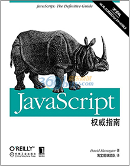
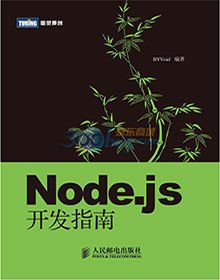
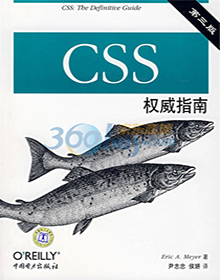
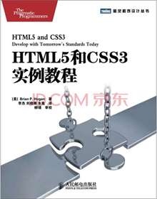
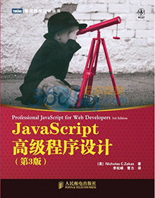
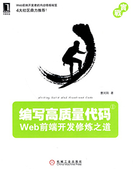

博客
关于
作品
北京之旅
关于我
看过的书
去过的地方
谈过的恋爱
暗恋过的人
听过的歌
走过的路
常用的网络
熟悉的工具
头疼的问题
关于我
我的书架

书名：javascript权威指南（第6版）
类别：前端/js

书名：Node.js开发指南
类别：前端/js
书名：php和mysql web开发（原书第4版）
类别：web前端/php
书名：jQuery Mobile快速入门
类别：前端/js/jquery
看完的书

书名：css权威指南（第三版）
类别：前端/css
阅读次数：大于3次
读后感
书名：精通CSS：高级Web标准解决方案
类别：前端/css
阅读次数：1次
读后感
书名：JavaScript DOM编程艺术
类别：前端/js
阅读次数：大于3次
读后感
书名：随遇而安/孟非
类别：名人/传记
阅读次数：1次
读后感

书名：HTML5和CSS3实例教程
类别：前端/css
阅读次数：1次
读后感
正在看的书

书名：JavaScript高级程序设计（第3版）
类别：前端/js
阅读次数：1次
读后感

书名：编写高质量代码：Web前端
类别：前端/css/js
阅读次数：1次
读后感